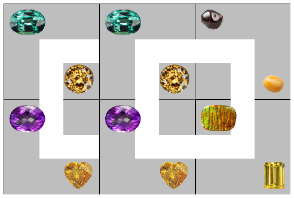
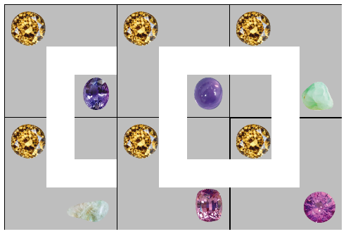
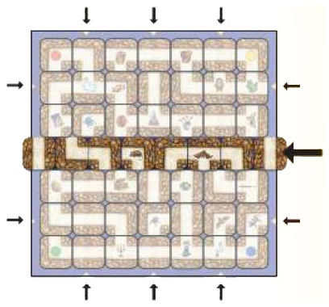
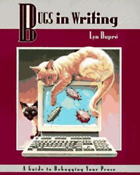

Software Development

From the first day of the semester forward we expect students (you) to visit this page once per 24 hours.
“To be any kind of professional means being willing to tell the client a truth he doesn’t want to hear.” – Holman W. Jenkins, Jr.
“I’m still friends with folks I worked with decades ago, many who would beat me up in meetings, ripping apart my arguments with what seemed like an ice pick. Still, they made me better.” – Andy Kessler

Sunday, November 6th, 2022 7:25:01pm
Code Walks for Mon, 7 November 2022
You will present your implementation for 6 —
Presenters: David Yan, Jose Sulaiman |
Head Reader: Luke Po |
Assistant Reader: Ross Curcio |
Secretary: Aditya Selvam |
|
Presenters: Derek Leung, Kiran Gregerson |
Head Reader: Jessica Su |
Assistant Reader: Akshay Dupuguntla |
Secretary: Chris Tozlowski |
Presenters: Bryce Devoe, Ivan Rudyakov |
Head Reader: Michael Ford |
Assistant Reader: Abby Wisnewski |
Secretary: Joseph Henson |
|
Presenters: Emmanuel Manolios |
Head Reader: Tarif Khan |
Assistant Reader: Jason Cheung |
Secretary: Qishen Pang |
Presenters: Micaela Trzcinski, Jack Whitten |
Head Reader: Grace Miller |
Assistant Reader: Aaron Wachowiak |
Secretary: Diana Rodriguez |
|
Presenters: Diana Rodriguez, Thomas Mactaggart |
Head Reader: Kenny Jung |
Assistant Reader: Daniel Robbins |
Secretary: Anna Maria Barbiellini Amidei |
Presenters: Jack Craciun, Logan Morneault |
Head Reader: Chengyi Kuang |
Assistant Reader: Zekai Shen |
Secretary: John McCarthy |
|
Presenters: Monroe Chung, Yolanda Jarrin |
Head Reader: Brian Gay |
Assistant Reader: Hussain Khalil |
Secretary: Eoin Flynn |
Friday, November 4th, 2022 7:42:54pm
You have received an email that introduces you to your new partner and the assigned code base.
The on-boarder should conduct an overview code inspection with the on-boardee as soon as feasible. If the latter then decides that using his/her former code base would be preferable, switch roles so that the two of you can make an informed decision.
collect five sample project-design decisions that illustrate why the alternative code base is preferred to the assigned one;
formulate a justification for each sample why the decision of the alternative code base is superior and a two-line executive summary of this justification;
turn these five problem descriptions into an HTML memo addressed to your section’s instructor;
For the few cross-section pairs, address the memo to both instructors.
send the memo and a request for a meeting to your section’s instructor by Saturday 08:00pm, CCing the on-boardee and the tech TA.
For the few cross-section pairs, send the email to both instructors.

Friday, November 4th, 2022 8:54:49am
We will not run a self-evaluation for 6 —
Meanwhile, note today’s front-page WSJ headline.
Wednesday, November 2nd, 2022 9:04:48pm
Code Walks for Thu, 3 November 2022
Presenters: Joey Kim, Alec Norrie |
Head Reader: Nuocheng Wang |
Assistant Reader: Nick Selvitelli |
Secretary: Aleksander Aguilar |
|
Presenters: Henry Geng, Eric Yip |
Head Reader: Shaun Gentilin |
Assistant Reader: Jack Denson |
Secretary: Alec Norrie |
Presenters: Colin Rozzi, Zach O'Brien |
Head Reader: Diego Valdivia Cox |
Assistant Reader: Jacob Monticello |
Secretary: Max Leroux |
|
Presenters: Andrew Sayegh, Kyle Chung |
Head Reader: Xun Xu |
Assistant Reader: Stephen Magliocchino |
Secretary: Caroline Zhu |
Presenters: Reilly Farrell, Owen Thurm |
Head Reader: Lillianna Gund |
Assistant Reader: Katherine Payne |
Secretary: Jojo Broussard |
|
Presenters: Joseph Kwilman, Nate Moore |
Head Reader: Charles Williams |
Assistant Reader: John Walsh |
Secretary: Vasilios Gjezo |
Presenters: Lowell Camp, Dario Ortiz |
Head Reader: Yuxuan Qiu |
Assistant Reader: Leah Zeisner |
Secretary: Andre Danahy |
|
Presenters: Marcus Roldan, Jason Jn Baptiste |
Head Reader: Evan Ritzcovan |
Assistant Reader: Qianyong Hu |
Secretary: Monroe Chung |

Wednesday, November 2nd, 2022 12:40:28pm
You may wish to run your xgames script (6 —
Tuesday, November 1st, 2022 9:13:10pm
Please read up on on presenting in a top-down fashion in Presenting a Milestone.
Code Walks for Wed, 2 November 2022
Presenters: Jessica Su, Jamie Lin |
Head Reader: Thomas Crook |
Assistant Reader: Chris Tozlowski Dylan |
Secretary: Michael Guo Akshay |
|
Presenters: Dylan Sapienza, Thomas Crook |
Head Reader: Marcus Roldan |
Assistant Reader: Luke Po |
Secretary: Benjamin Alonzo |
Presenters: Emmanuel Manolios |
Head Reader: Colin Rozzi |
Assistant Reader: Adam Smith |
Secretary: Justin Kwon Zachar |
|
Presenters: Michael Ford, Joseph Henson |
Head Reader: Caroline Zhu |
Assistant Reader: Nithya Balaji |
Secretary: Ivan Rudyakov |
Presenters: Daniel Robbins |
Head Reader: Luka Jovanovic |
Assistant Reader: Ty Marshall Dylan Burati |
Secretary: Tao Setoguchi |
|
Presenters: Tarif Khan, Emily Minor |
Head Reader: Jaron Cui |
Assistant Reader: Jack Whitten |
Secretary: Kenny Jung |
Presenters: Chengyi Kuang, Zekai Shen |
Head Reader: Jonathan Hsieh |
Assistant Reader: Patricio Bentin |
Secretary: Hussain Khalil |
|
Presenters: Austin Ho, Eoin Flynn |
Head Reader: Nelwin Gonzalez Barreto |
Assistant Reader: Yolanda Jarrin |
Secretary: Dylan Huang |
Monday, October 31st, 2022 6:13:24pm
Revisit the constraints on the integration tests in 6 —
Sunday, October 30th, 2022 7:20:23pm
Code Walks for Mon, 31 October 2022
Presenters: Nick Frank, Kyle Ednie |
Head Reader: Akshay Dupuguntla |
Assistant Reader: Garrett Michiels |
Secretary: Shaun Gentilin |
|
Presenters: Benjamin Alonzo, Jack Denson |
Head Reader: Eric Yip |
Assistant Reader: Aleksander Aguilar |
Secretary: Nuocheng Wang |
Presenters: Diego Valdivia Cox, Jacob Monticello |
Head Reader: Zachar Hankewycz |
Assistant Reader: Tarif Khan |
Secretary: Kyle Chung |
|
Presenters: Vedant Rautela, Carlos Gimeno |
Head Reader: Stephen Magliocchino |
Assistant Reader: Bryce Devoe |
Secretary: Emmanuel Manolios |
Presenters: Lillianna Gund, Max Hayashi |
Head Reader: Nate Moore |
Assistant Reader: Vasilios Gjezo |
Secretary: Micaela Trzcinski |
|
Presenters: Charles Williams, John Walsh |
Head Reader: Katherine Payne |
Assistant Reader: Emily Minor |
Secretary: Joseph Kwilman |
Presenters: Qianyong Hu, Yuxuan Qiu |
Head Reader: Austin Ho |
Assistant Reader: Kincent Lan |
Secretary: Tyler Furrier |
|
Presenters: Andre Danahy, Colton Williams |
Head Reader: Evan Ritzcovan Nick Coury |
Assistant Reader: Angel Gong |
Secretary: Kane Xu |
Thursday, October 27th, 2022 4:08:49pm
If a player’s current position is its current goal, should its strategy return “pass” when called in this situation?
Also note that a type-setting mistake in 5 —

Wednesday, October 26th, 2022 8:44:39pm
Code Walks for Thu, 27 October 2022
Presenters: Luke Po, Chris Tozlowski |
Head Reader: Jack Denson |
Assistant Reader: Kyle Ednie |
Secretary: Thomas Crook |
|
Presenters: Jamie Lin, Jessica Su |
Head Reader: Nick Frank |
Assistant Reader: Dylan Sapienza |
Secretary: Marcus Roldan |
Presenters: Nithya Balaji, Qishen Pang |
Head Reader: Ivan Rudyakov |
Assistant Reader: Zach O'Brien |
Secretary: Josef LaFranchise |
|
Presenters: Justin Kwon, Emily Smith |
Head Reader: Adam Smith |
Assistant Reader: Joseph Henson |
Secretary: Colin Rozzi |
Presenters: Can Ivit, Luka Jovanovic |
Head Reader: Kenny Jung Daniel Robbins |
Assistant Reader: Jaron Cui |
Secretary: Ty Marshall |
|
Presenters: Kenny Jung, Ty Pacchione |
Head Reader: Tao Setoguchi |
Assistant Reader: Duncan Vogel |
Secretary: Luis Soto |
Presenters: Jonathan Hsieh, Shashwat Patel |
Head Reader: Andre Danahy |
Assistant Reader: Dylan Huang |
Secretary: Nelwin Gonzalez Barreto |
|
Presenters: Michael Guo, Patricio Bentin |
Head Reader: Hussain Khalil |
Assistant Reader: Lowell Camp |
Secretary: Yolanda Jarrin |
Wednesday, October 26th, 2022 8:43:38pm
Warning The definition of Gem in The Gems explicitly lists all
the names (as strings) to be used for this purpose. Sadly, the tar bundle that
contains these images with these specific names contains additional files whose
names are not listed in this definition. If you automated the definition
of treasure names by reading the file names—
Wednesday, October 26th, 2022 3:02:00pm
Congratulations go to Charles W. and John W. for exposing a bug in my reference implementation. And a great thanks for persistently bugging Sam about it.
Just after I had exhorted students in class and in office hours not to
create tabular pieces of code by hand—
; counterclockwise rotation by 90 degrees (define TileKey90 (hash NS EW EW NS SW SE SE EN EN NW NW SW EWS NSE NSE NEW NEW NSW NSW EWS NSEW NSEW)) #; {Hashof 1String [List 1String 1String 1String 1String]} (define TileKeyRotation (local (#; {1String -> [List 1String 1String 1String 1String]} (define (all-rotations key0) (for/fold ([key key0] [r (list key0)] #:result r) ([d (rest Degrees)]) (define next (hash-ref TileKey90 key)) (values next (append r (list next)))))) (make-hash (map (λ (ks) (cons (second ks) (all-rotations (second ks)))) TileKey))))
Wednesday, October 26th, 2022 12:14:45pm
You may wish to run your xstrategy script (5 —
Important Jessica S. noticed a ambiguity in the strategy specification
4 —
This mistake does not affect any past grades, but it will affect the upcoming test fest. If you tried to go to specific (unique) tiles instead of specific coordinates, please change your code to match the now clarified specification. (The fix should be minor in any of the chosen PLs.)
Tuesday, October 25th, 2022 9:40:56pm
Code Walks for Wed, 26 October 2022
Presenters: Kiran Gregerson, Derek Leung |
Head Reader: Dylan Sapienza |
Assistant Reader: Jamie Lin |
Secretary: Ross Curcio |
|
Presenters: Jose Sulaiman, David Yan |
Head Reader: Nick Selvitelli |
Assistant Reader: Michael Guo |
Secretary: Garrett Michiels |
Presenters: Aleksander Aguilar, Shannon McInnis |
Head Reader: Jacob Monticello |
Assistant Reader: Carter Brainerd |
Secretary: Bryce Devoe |
|
Presenters: Abby Wisnewski, Stephen Magliocchino |
Head Reader: Emily Smith |
Assistant Reader: Nolan Pollack |
Secretary: Andrew Sayegh |
Presenters: Joseph Kwilman, Nate Moore |
Head Reader: Reilly Farrell |
Assistant Reader: Anna Maria Barbiellini Amidei |
Secretary: Max Hayashi |
|
Presenters: Grace Miller, Sophia Thomas |
Head Reader: Micaela Trzcinski |
Assistant Reader: Ty Pacchione |
Secretary: Aaron Wachowiak |
Presenters: Kincent Lan, Hussain Khalil |
Head Reader: Kane Xu |
Assistant Reader: Jack Craciun |
Secretary: Angel Gong |
|
Presenters: Evan Ritzcovan, Nicholas Moulle-Berteaux |
Head Reader: Tyler Furrier |
Assistant Reader: John McCarthy |
Secretary: Colton Williams |

Sunday, October 23rd, 2022 9:02:44pm
Code Walks for Mon, 24 October 2022
Presenters: Thomas Crook, Dylan Sapienza |
Head Reader: Aleksander Aguilar |
Assistant Reader: Jessica Su |
Secretary: Henry Geng |
|
Presenters: Ross Curcio, Garrett Michiels |
Head Reader: Sky Wang |
Assistant Reader: David Yan |
Secretary: Nick Selvitelli |
Presenters: Ivan Rudyakov, Bryce Devoe |
Head Reader: Nithya Balaji |
Assistant Reader: Andrew Sayegh |
Secretary: Nolan Pollack |
|
Presenters: Justin Kwon, Emily Smith |
Michael Ford, Joseph Henson |
Head Reader: Josef LaFranchise |
Assistant Reader: Max Leroux |
Secretary: Xun Xu |
Presenters: Luis Soto, Sahana Tankala |
Head Reader: Jack Whitten |
Assistant Reader: Jojo Broussard |
Secretary: Dylan Burati |
Presenters: Nelwin Gonzalez Barreto, Leah Zeisner |
Head Reader: Dario Ortiz |
Assistant Reader: David Mitre |
Secretary: Lowell Camp |
Wednesday, October 19th, 2022 8:50:21pm
Code Walks for Thu, 20 October 2022
Presenters: Kiran Gregerson, Derek Leung |
Head Reader: Jose Sulaiman |
Assistant Reader: Ross Curcio |
Secretary: Kyle Ednie |
|
Presenters: Luke Po, Chris Tozlowski |
Head Reader: Michael Guo |
Assistant Reader: Aleksander Aguilar |
Secretary: Joey Kim |
Presenters: Emily Smith, Justin Kwon |
Head Reader: Joseph Henson |
Assistant Reader: Xun Xu |
Secretary: Jacob Monticello |
|
Presenters: Aleksander Aguilar, Shannon McInnis |
Head Reader: Caroline Zhu |
Assistant Reader: Vedant Rautela |
Secretary: Adam Smith |
Presenters: Carter Brainerd, Anna Maria Barbiellini Amidei |
Head Reader: Max Hayashi |
Assistant Reader: Luis Soto |
Secretary: Daniel Robbins |
|
Presenters: Jack Whitten, Micaela Trzcinski |
Head Reader: Ty Pacchione |
Assistant Reader: Sophia Thomas |
Secretary: Reilly Farrell |
Presenters: Tyler Furrier, Angel Gong |
Head Reader: Qianyong Hu |
Assistant Reader: Colton Williams |
Secretary: Kincent Lan |
|
Presenters: Kane Xu, John McCarthy |
Head Reader: Eoin Flynn |
Assistant Reader: Chengyi Kuang |
Secretary: Evan Ritzcovan |
Wednesday, October 19th, 2022 12:34:46pm
You may wish to run your xstate script (4 —
Tuesday, October 18th, 2022 9:17:46pm
Code Walks for Wed, 19 October 2022
Presenters: Nick Selvitelli, Akshay Dupuguntla |
Head Reader: David Yan |
Assistant Reader: Henry Geng |
Secretary: Eric Yip |
|
Presenters: Nuocheng Wang, Shaun Gentilin |
Head Reader: Garrett Michiels |
Assistant Reader: Thomas Crook |
Secretary: Dylan Sapienza |
Presenters: Simar Chadha, Tarif Khan |
Head Reader: Carlos Gimeno |
Assistant Reader: Zachar Hankewycz |
Secretary: Jason Cheung |
|
Presenters: Andrew Sayegh, Kyle Chung |
Head Reader: Bryce Devoe |
Assistant Reader: Michael Ford |
Secretary: Nithya Balaji |
Presenters: Vasilios Gjezo, Joseph Pierre-Louis |
Head Reader: Diana Rodriguez |
Assistant Reader: Thomas Mactaggart |
Secretary: Charles Williams |
|
Presenters: Ty Marshall, Kelli Therrien |
Head Reader: Sahana Tankala |
Assistant Reader: Owen Thurm |
Secretary: John Walsh |
Presenters: Brian Gay, Dylan Huang |
Head Reader: Lowell Camp |
Assistant Reader: Yuxuan Qiu |
Secretary: Dario Ortiz |
|
Presenters: Deion Smith, David Mitre |
Head Reader: Angel Gong |
Assistant Reader: Austin Ho |
Secretary: Leah Zeisner |
Monday, October 17th, 2022 8:25:59am

Sunday, October 16th, 2022 9:06:32pm
Code Walks for 17 October 2022
Section MF-915
Presenters: Joey Kim, Alec Norrie |
Head Reader: Chris Tozlowski |
Assistant Reader: Jose Sulaiman |
Secretary: Sky Wang |
|
Presenters: Nick Frank, Kyle Ednie |
Head Reader: Ross Curcio |
Assistant Reader: Derek Leung |
Secretary: Jack Denson |
Section MF-1030
Presenters: Colin Rozzi, Zach O'Brien |
Head Reader: Carter Brainerd |
Assistant Reader: Diego Valdivia Cox |
Secretary: Justin Kwon |
|
Presenters: Adam Smith, Caroline Zhu |
Head Reader: Qishen Pang |
Assistant Reader: Ivan Rudyakov |
Secretary: Vedant Rautela |
Section BL-1030
Presenters: Jaron Cui, Tao Setoguchi |
Head Reader: Aaron Wachowiak |
Assistant Reader: Shannon McInnis |
Secretary: Luka Jovanovic |
|
Presenters: Duncan Vogel, Kyle Koo |
Head Reader: Joseph Kwilman |
Assistant Reader: Can Ivit |
Secretary: Nate Moore |
Section BL-135
Presenters: Nick Coury, Alex Kerwick |
Head Reader: Patricio Bentin |
Assistant Reader: Monroe Chung |
Secretary: Jonathan Hsieh |
|
Presenters: Logan Morneault, Jack Craciun |
Head Reader: Yolanda Jarrin |
Assistant Reader: Jason Jn Baptiste |
Secretary: Shashwat Patel |
Friday, October 14th, 2022 6:48:53pm
Why 0? Code that uses null (or none) as an option element or a value
that leaks (in a PL without protection) is a negative contribution to
the code base. Some time later, a responsible developer will have to remove
this bad code from the code base. To warn you now about such bad choices, we
have decided to ask the TAs to deduct all points for such uses of
null in code for 2 —
Why no points for an accurate self-eval? We made a mistake with the rubric and
forgot to allocate points for the self-evaluation step for 2 —
Wednesday, October 12th, 2022 11:54:50pm
Code Walks for 13 October 2022
Section MF-915
Presenters: Henry Geng, Eric Yip |
Head Reader: Kiran Gregerson |
Assistant Reader: Shaun Gentilin |
Secretary: Akshay Dupuguntla |
|
Presenters: Michael Guo, Patricio Bentin |
Head Reader: Dylan Sapienza |
Assistant Reader: Nick Selvitelli |
Secretary: David Yan |
Section MF-1030
Presenters: Jason Cheung, Zachar Hankewycz |
Head Reader: Abby Wisnewski |
Assistant Reader: Carlos Gimeno |
Secretary: Tarif Khan |
|
Presenters: Adam Smith, Caroline Zhu |
Head Reader: Qishen Pang |
Assistant Reader: Ivan Rudyakov |
Secretary: Vedant Rautela |
Section BL-1030
Presenters: Thomas Mactaggart, Diana Rodriguez |
Head Reader: Vasilios Gjezo |
Assistant Reader: Charles Williams |
Secretary: Jaron Cui |
|
Presenters: Duncan Vogel, Kyle Koo |
Head Reader: Joseph Kwilman |
Assistant Reader: Can Ivit |
Secretary: Nate Moore |
Section BL-135
Presenters: Dario Ortiz, Lowell Camp |
Head Reader: David Mitre |
Assistant Reader: Brian Gay |
Secretary: Zekai Shen |
|
Presenters: Colton Williams, Andre Danahy |
Head Reader: Nick Coury |
Assistant Reader: Kincent Lan |
Secretary: Jack Craciun |
Wednesday, October 12th, 2022 12:08:26pm
You may wish to run your xboard script (3 —
Tuesday, October 11th, 2022 11:28:26pm
Code Walks for 12 October 2022
Section MF-915
Presenters: Benjamin Alonzo, Jack Denson |
Head Reader: Alec Norrie |
Assistant Reader: Nick Frank |
Secretary: Jessica Su |
|
Presenters: Aditya Selvam, Sky Wang |
Head Reader: Derek Leung |
Assistant Reader: Nuocheng Wang |
Secretary: Luke Po |
Section MF-1030
Presenters: Josef LaFranchise, Nolan Pollack |
Head Reader: Zach O'Brien |
Assistant Reader: Alex Choung Colin Rozzi |
Secretary: Diego Valdivia Cox |
|
Presenters: Xun Xu, Max Leroux |
Head Reader: Justin Kwon |
Assistant Reader: Emmanuel Manolios |
Secretary: Carter Brainerd |
Section BL-1030
Presenters: Katherine Payne, Dylan Burati |
Head Reader: Joseph Pierre-Louis |
Assistant Reader: Kenny Jung |
Secretary: Duncan Vogel |
|
Presenters: Jojo Broussard, Aaron Wachowiak |
Head Reader: Emily Minor |
Assistant Reader: Lillianna Gund |
Secretary: Grace Miller |
Section BL-135
Presenters: Yolanda Jarrin, Monroe Chung |
Head Reader: Alex Kerwick |
Assistant Reader: Shashwat Patel |
Secretary: Logan Morneault |
|
Presenters: Marcus Roldan, Jason Jn Baptiste |
Head Reader: Nicholas Moulle-Berteaux |
Assistant Reader: Jonathan Hsieh |
Secretary: Patricio Bentin |
Saturday, October 8th, 2022 11:09:20am
After scanning the sampled questions and sprints, we decided
not to grade the memos for 1 —
As some of you have noticed, I accidentally released 3 —
Monday, October 3rd, 2022 8:54:09am
It’s October and you survived the “finger exercises” of Sw Dev. But did you actually do them in the expected manner? Did you find the libraries that turn these problems into “10 liners”? That make these solutions robust enough to scale? If not, you have fallen behind and you should use the relative calm of this week to go back and re-do these exercises in peace.
Sunday, October 2nd, 2022 9:14:31pm
Code Walks for 03 October 2022
Section MF-915
Presenters: Shaun Gentilin, Nuocheng Wang |
Head Reader: Alec Norrie |
Assistant Reader: David Yan |
Secretary: Jose Manzur |
Presenters: Eric Yip, Henry Geng |
Head Reader: Luke Po |
Assistant Reader: Michael Guo |
Secretary: Jessica Su |
Section MF-1030
Presenters: Diego Valdivia Cox, Jacob Monticello |
Head Reader: Max Leroux |
Assistant Reader: Carlos Gimeno |
Secretary: Zach O'Brien |
Presenters: Emmanuel Manolios |
Head Reader: Qishen Pang |
Assistant Reader: Xun Xu |
Secretary: Caroline Zhu |
Section BL-1030
Presenters: Charles Williams, John Walsh |
Head Reader: Jack Whitten |
Assistant Reader: Kelli Therrien |
Secretary: Jaron Cui |
Presenters: Thomas Mactaggart, Diana Rodriguez |
Head Reader: Can Ivit |
Assistant Reader: Vasilios Gjezo |
Secretary: Dylan Burati |
Section BL-135
Presenters: Nelwin Gonzalez Barreto, Leah Zeisner |
Head Reader: Yuxuan Qiu |
Assistant Reader: Nicholas Moulle-Berteaux |
Secretary: Jonathan Hsieh |
Presenters: Hussain Khalil, Kincent Lan |
Head Reader: Dylan Huang |
Assistant Reader: Zekai Shen |
Secretary: Brian Gay |

Thursday, September 29th, 2022 5:52:09pm
Due to a glitch in the daemon script, the self-eval forms did not get posted until just before 10:00am. We will therefore harvest the forms just before midnight this time.
Wednesday, September 28th, 2022 10:42:03pm
Note If you work by yourself (because your partner dropped or you never had a partner), please make sure to inform Sam, the head TA.
Code Walks for 29 September 2022
Presenters: Garrett Michiels, Ross Curcio |
Head Reader: Nuocheng Wang |
Assistant Reader: Kyle Ednie |
Secretary: Luke Po |
Presenters: Jamie Lin, Jessica Su |
Head Reader: Ross Curcio |
Assistant Reader: Nick Selvitelli |
Secretary: Shaun Gentilin |
Presenters: Logan Morneault, Jack Craciun |
Head Reader: Nelwin Gonzalez Barreto |
Assistant Reader: Hussain Khalil |
Secretary: Yuxuan Qiu |
Presenters: Jonathan Hsieh, Shashwat Patel |
Head Reader: Chengyi Kuang |
Assistant Reader: Jason Jn Baptiste |
Secretary: David Mitre |
Presenters: Vedant Rautela, Carlos Gimeno |
Head Reader: Diego Valdivia Cox |
Assistant Reader: Zach O'Brien |
Secretary: Qishen Pang |
Presenters: Max Leroux, Xun Xu |
Head Reader: Caroline Zhu |
Assistant Reader: Jason Cheung |
Secretary: Jacob Monticello |
Presenters: Emily Minor, Daniel Robbins |
Head Reader: Micaela Trzcinski |
Assistant Reader: Joseph Kwilman |
Secretary: Grace Miller |
Presenters: Reilly Farrell, Owen Thurm |
Head Reader: Ty Marshall |
Assistant Reader: Katherine Payne |
Secretary: Vasilios Gjezo |
Tuesday, September 27th, 2022 9:08:29pm
Code Walks for 28 September 2022
Section MF-915
Presenters: Jose Manzur, David Yan |
Head Reader: Akshay Dupuguntla |
Assistant Reader: Jamie Lin |
Secretary: Alec Norrie |
|
Presenters: Garrett Michiels, Ross Curcio |
Head Reader: Nuocheng Wang |
Assistant Reader: Kyle Ednie |
Secretary: Luke Po |
Section MF-1030
Presenters: Max Leroux, Xun Xu |
Head Reader: Caroline Zhu |
Assistant Reader: Jason Cheung |
Secretary: Jacob Monticello |
|
Presenters: Vedant Rautela, Carlos Gimeno |
Head Reader: Diego Valdivia Cox |
Assistant Reader: Zach O'Brien |
Secretary: Qishen Pang |
Section BL-1030
Presenters: Kelli Therrien, Ty Marshall |
Head Reader: Dylan Burati |
Assistant Reader: Jaron Cui |
Secretary: Jack Whitten |
|
Presenters: Can Ivit, Luka Jovanovic |
Head Reader: Thomas Mactaggart |
Assistant Reader: Charles Williams |
Secretary: Lillianna Gund |
Section BL-135
Presenters: Dylan Huang, Brian Gay |
Head Reader: Hussain Khalil |
Assistant Reader: David Mitre |
Secretary: Simar Gursimar |
|
Presenters: Chengyi Kuang, Zekai Shen |
Head Reader: Jason Jn Baptiste |
Assistant Reader: Logan Morneault |
Secretary: Shashwat Patel |
Tuesday, September 27th, 2022 10:03:47am
Someone asked me yesterday how I learned to write (in English, as an immigrant). My answer addressed the “negative feedback” part of an improvement cycle, not the “positive energy” part.
Reading literature and books on writing is the essence of the second half of my answer. Reading good literature helps you understand writing somewhat; see Hemingway’s description of his torturous procedures of writing individual paragraphs (in his Paris novels).
Reading books on writing is a good start, which is why I list Strunk and White on the Readings page. An alternative is

which, as the title suggests, originates in computer science. Which books are helpful depends on your situation and goals.
Saturday, September 24th, 2022 6:55:31pm
The transformation of textual information into internal
data is known as parsing, a technical problem that spawned an
entire research area. Parsing is so complex, it should never be used
in an introductory course but to this day, many such courses assign
programs that read text, analyze it, and react to it—
At first glance, JSON is a simple notation for writing down information in terms of Booleans, Strings, Numbers, arrays of JSON expressions, and objects of JSON expressions. But, as it turns out, turning JSON information into internal data is a minefield; indeed, no two JSON parsers seem to accept the same, non-simple JSON inputs.
You should keep this fact in mind for your upcoming co-op and future employment.
In case you need an example of the problems that such complexity – due to simple-looking notation – can cause, read up on how JSON reading can bring down Windows.
Friday, September 23rd, 2022 9:12:53am
A Diversion On Wednesday I briefly addressed the difference
between arbitrarily large and infinite in my
section—
In response Ben pointed me to a fun video that explains this idea at an intuitive level. Enjoy!
Monday, September 19th, 2022 8:00:00am
Please read Egoless Programming. It is the only required reading text this semester.
Thursday, September 15th, 2022 6:43:54am
A student came to my office hours last night with questions about the teaching philosophy behind the course and the core curriculum. For anyone who’s interested in this question on how to design a core programming curriculum, please visit
Tuesday, September 13th, 2022 6:01:40pm
B —
Sam asked me not to deduct points. He worked around this problem.
Tuesday, August 9th, 2022 2:19:59pm
Welcome to Software Development Fall 2022.
See Abstract for a concise course description.
The quote at the top of the page characterizes how the instructors will lead this course as professionals. They firmly embrace the idea that if you pay a lot of money for education, the instructors have an obligation to deliver as much value as possible. The course is an intensive experience.
If you choose to take the course, familiarize yourself with the web site as
quickly as possible. For the first couple of weeks, —
Since most of you are too young to remember the massive crashes of the tech industry that your instructors have experienced, here is a collection of recent headlines.
Every year the course comes with a different theme song, usually from someone who recently died. (Yes your lead instructor is that old.) Well, Tom Petty died some years back but the song’s title is still a good theme.
Alternatively, watch a tribute version from Fenway Park.